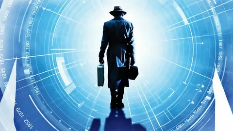
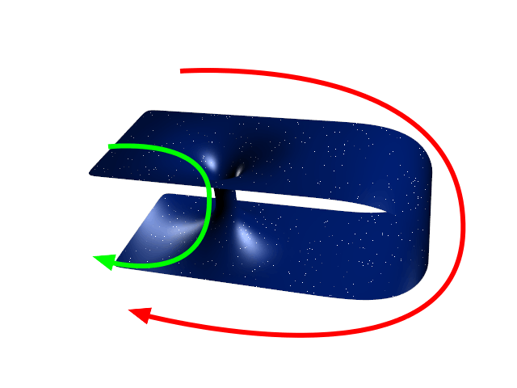
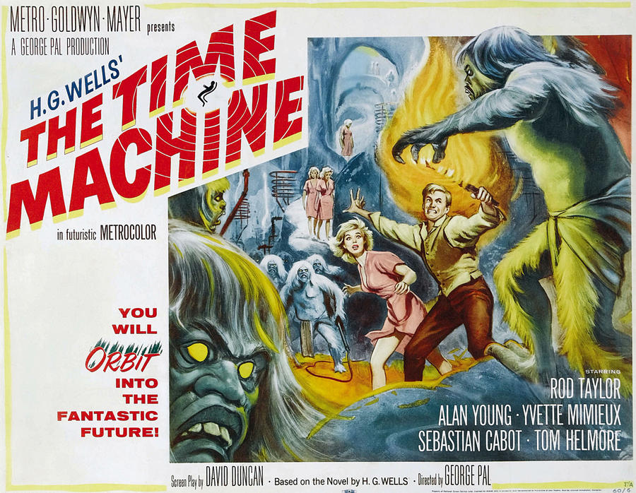

Путешествие во времени
Бесконечность
не предел
Суть
Путеше́ствие во вре́мени — гипотетическое перемещение человека или каких-либо объектов из настоящего в прошлое
или будущее, в частности, с помощью технического устройства, называемого «машиной времени».

Путешествия в будущее
Современная наука допускает несколько теоретически возможных способов путешествия в будущее (строго говоря, любой
объект естественным образом путешествует в будущее с течением времени, поэтому речь идет о путешествии «в обход»
времени):
- Физический
- Движение со скоростью, близкой к скорости света. Время путешествия, измеренное по часам того,
кто
двигался с такой скоростью, всегда меньше измеренного по часам того, кто оставался неподвижен
(точнее: того, кто не испытывал ускорений — «парадокс близнецов»).
- Нахождение в области сверхвысокой гравитации, например, вблизи горизонта событий чёрной дыры.
- Квантовый — теоретически более глубокое познание квантовой физики позволит не только
телепортировать
информацию, но и переносить физические объекты во времени и пространстве.
- Биологический — остановка метаболизма тела с последующим восстановлением (например: криоконсервация)
Путешествие в прошлое
Существует несколько гипотетических способов перемещения в прошлое:
- ерез так называемые «кротовые норы» (англ. wormhole — червоточина), гипотетически допускаемые Общей теорией
относительности, — некие туннели (возможно, очень короткие), соединяющие удалённые области в пространстве,
через нарушение топологии пространства. Разрабатывая теорию кротовых нор, К. Торн и М. Моррис[англ.]
заметили, что если перемещать один конец (А) кротовой норы с большой скоростью, а потом приблизить его к
другому концу (Б), то — в силу парадокса близнецов — объект, попавший в момент времени T во вход А, может
(см. ниже) выйти из Б в момент, предшествующий T (однако таким способом невозможно попасть во время,
предшествующее моменту создания машины времени).
Из уравнений Эйнштейна следует, что кротовая нора закроется раньше, чем путешественник сумеет пройти через
неё (как, например, в случае «моста Эйнштейна — Розена» — первой описанной кротовой норы), если её не будет
удерживать от этого так называемая «экзотическая материя» — материя с отрицательной плотностью энергии.
- В 1936 году Ван Стокум обнаружил, что тело, вращающееся вокруг массивного и бесконечно длинного цилиндра,
может попасть в прошлое (позже Ф. Типлер предположил, что это возможно и в случае цилиндра конечной
длины[3], однако более поздний результат С. Хокинга показывает, что в этом случае опять была бы необходима
«экзотическая материя»[4]). Таким цилиндром могла бы быть так называемая космическая струна, но нет никаких
свидетельств, что космические струны существуют, и вряд ли есть способ создавать новые.
- Выведенное в 2017 году Беном Типпеттом и Дэвидом Цангом решение уравнения Эйнштейна допускает возможность
существования замкнутой времениподобной кривой вне горизонта событий черной дыры[5][6]. Хотя существование
данной машины времени, по мнению исследователей, теоретически возможно, для этой модели, как и для Пузыря
Алькубьерре, необходима экзотическая материя.

В кино
Машина времени(1960)

«Машина времени» (англ. The Time Machine) — американский художественный фильм, поставленный
режиссёром Джорджем
Палом по мотивам одноимённого романа Герберта Уэллса. Джин Уоррен и Тим Баар получили премию «Оскар» за лучшие
визуальные эффекты за замедленные фотографические эффекты, которые показывают, как мир быстро меняется по мере
того, как путешественник во времени перемещается в будущее[3].